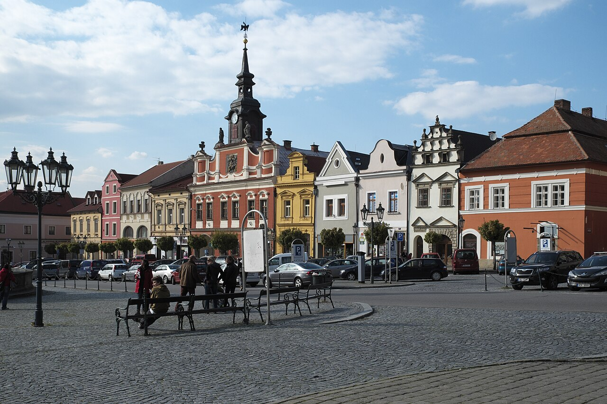
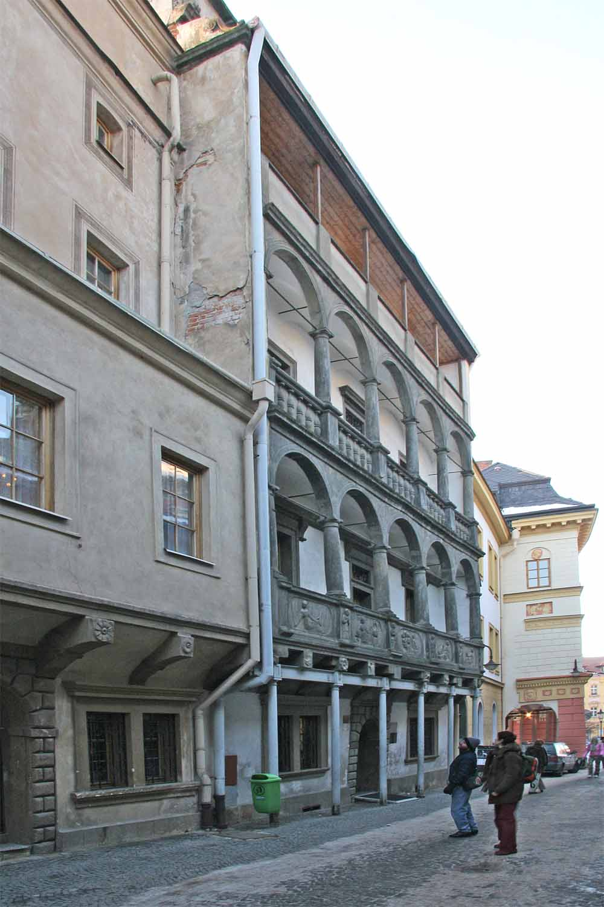
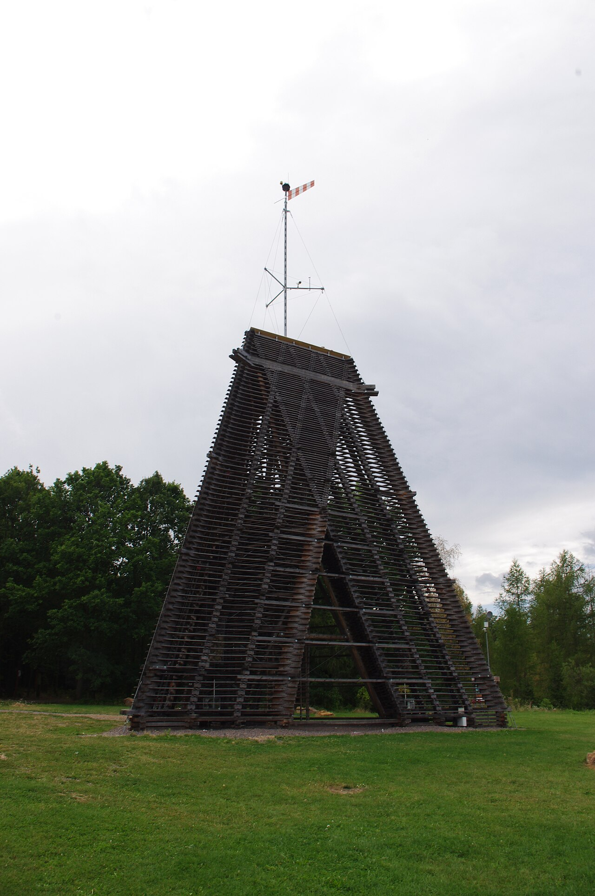
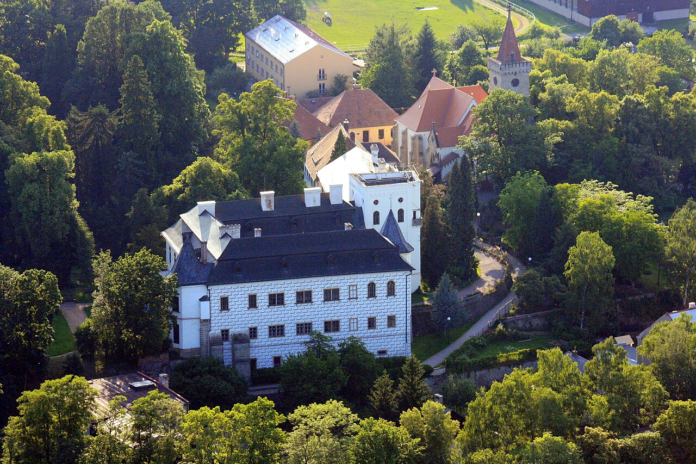
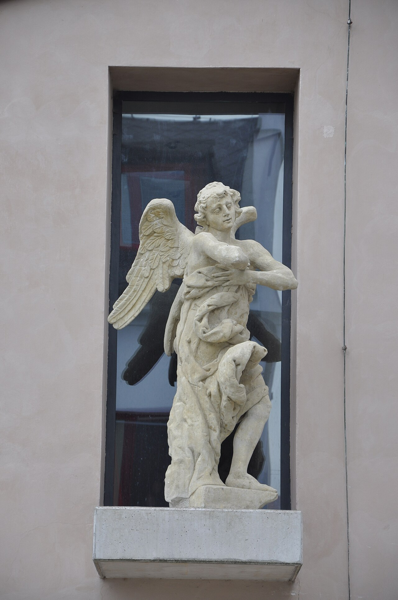

Historické centrum a Resselovo náměstí
Krátká procházka za kavárnami, restauracemi, obchody a atmosférou staré Chrudimi. Ideální první zastávka po příjezdu.




Tipy v okolí
Vybraná místa, kam se hosté dostanou pěšky z penzionu nebo během krátké jízdy autem.
Poptat pobytCentrum Chrudimi je příjemné na pěší procházku, muzea se hodí i při horším počasí a Podhůra nebo Slatiňany dají pobytu trochu přírody.
Krátká procházka za kavárnami, restauracemi, obchody a atmosférou staré Chrudimi. Ideální první zastávka po příjezdu.
Známé chrudimské muzeum v historickém Mydlářovském domě. Praktický tip pro rodiny, páry i deštivé odpoledne.

Klidnější kulturní zastávka v bývalém kostele sv. Josefa. Hodí se pro hosty, kteří chtějí během pobytu vidět něco netradičního.
Rekreační lesy u Chrudimi, rozhledna, trasy na protažení a prostor pro děti. Dobrá volba, když chcete na chvíli mimo město.
Krátký výlet za město s parkem a zámeckým areálem na úpatí Železných hor. Příjemné pro pomalejší dopoledne.
Fotografie: Wikimedia Commons / GFreihalter, Zp, Ben Skála, Juhele_CZ, Jaroslav Bušta (CC BY-SA).
Rezervaci bereme jako poptávku. Po odeslání vám potvrdíme dostupnost termínu e-mailem nebo telefonicky.